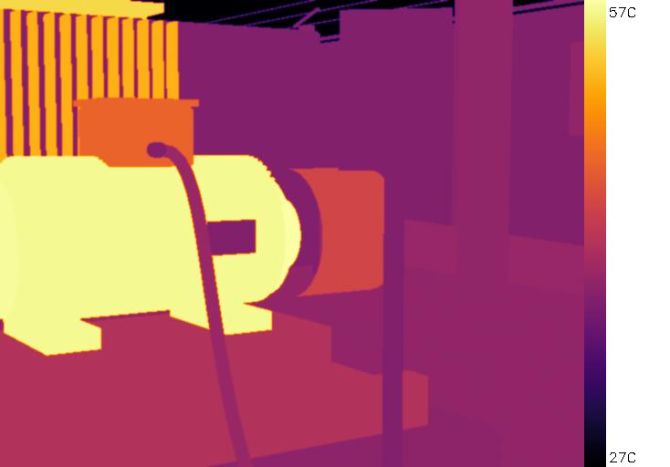
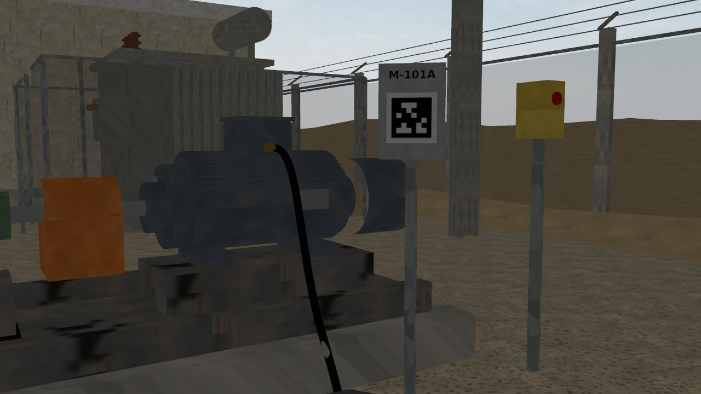
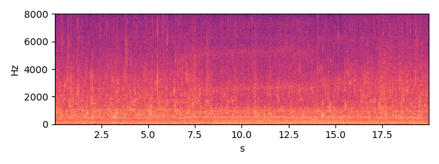
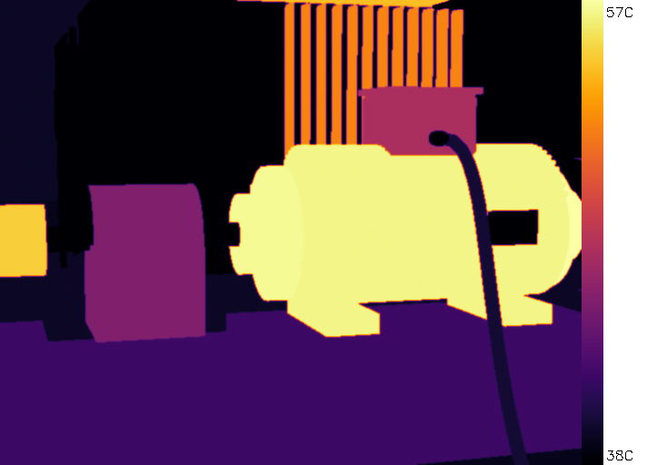
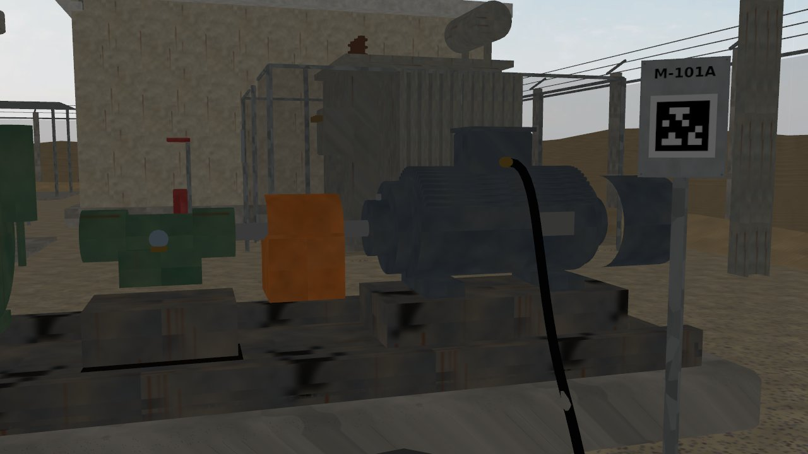
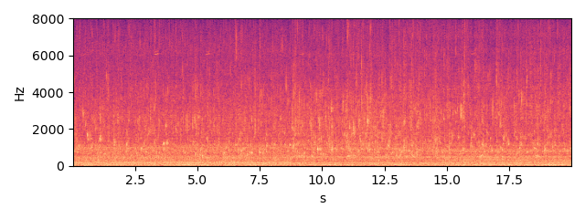

M-101A — TEFC induction motor, 2-pole, 50 Hz
Status critical HI 0.63 RUL 1.7 d [0.8-3.7] (band = 90 % interval)
Health indicator per inspection round; vertical lines = maintenance log entries; red band = RUL estimate.
Inspection snapshots (robot camera and microphone)

thermal, aim 1, max 57.6 C (Gazebo round 2026-10-03 16:41)

RGB, aim 1

sound, aim 1 (dwell window)

thermal, aim 2, max 57.4 C (Gazebo round 2026-10-03 16:41)

RGB, aim 2

sound, aim 2 (dwell window)
Alarm history
| time | level | fused score | HI | reasons | work order |
|---|---|---|---|---|---|
| 2026-10-12 23:26 | warning | 9.85 | 0.9478 | thermal_sibling | |
| 2026-10-13 18:29 | warning | 6.06 | 0.9124 | fused score | |
| 2026-10-17 17:05 | warning | 7.33 | 0.763 | thermal_sibling | |
| 2026-10-18 13:05 | critical | 10.74 | 0.5642 | acoustic_fusion, RUL<3d | requested |
| 2026-10-18 22:21 | critical | 10.77 | 0.4933 | acoustic_fusion, RUL<3d | |
| 2026-10-19 07:19 | critical | 7.29 | 0.626 | thermal_sibling, RUL<3d |
Maintenance log (CMMS view)
| date | type | details |
|---|---|---|
| 2026-10-06 | greasing | {"part": "motor_nde_brg"} |
| 2026-10-13 | greasing | {"part": "motor_de_brg"} |
| 2026-10-18 | work_order_opened | {"wo": "WO-0004", "priority": "critical", "reason": "acoustic_fusion; RUL<3d"} |
| 2026-10-20 | repair | {"wo": "WO-0004", "feedback": "confirmed", "parts_replaced": []} |